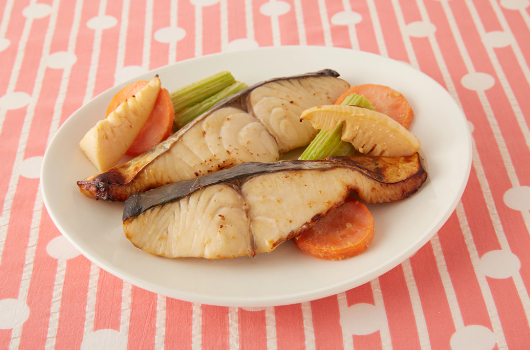

さわらと春野菜の味噌ヨーグルト焼き

材料（4人分）
- 明治ブルガリアヨーグルトLB81プレーン ... 1カップ
- 味噌... 大さじ3
- さわら... 4切れ
- にんじん... 1/2本
- たけのこ... 小1個
- せろり... 1/2本
作り方（調理時間:20分/目安）
- ボウルにヨーグルトと味噌を混ぜ合わせて、2つに分けます。
- にんじんは7～8mm厚さの輪切りにします。たけのこ、セロリはひと口大に切ります。
- 1）の一つにさわらを入れて冷蔵庫で2～3時間ほどおきます。
- 3）のさわらを、漬け床を軽くふき取ってから、魚焼きグリルで両面を香ばしく焼きます。2）の野菜を残りの1）にさっとくぐらせてさわらと一緒に10分ほど焼きます。
引用元
明治の食育 おすすめレシピ